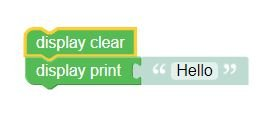
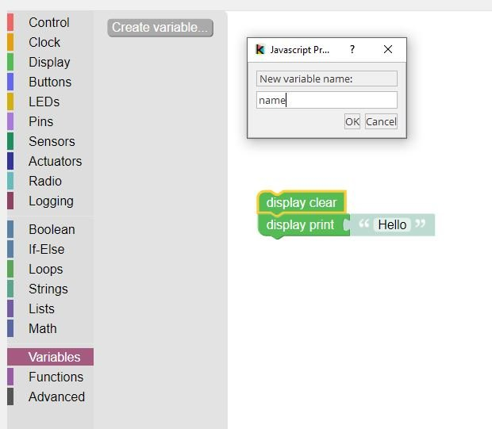
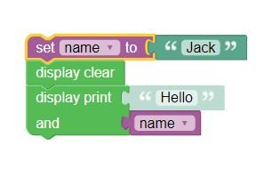
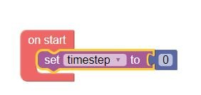
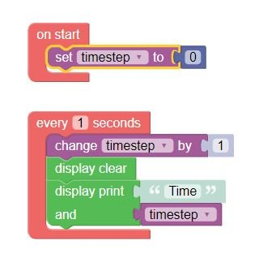
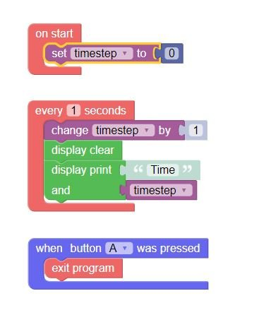
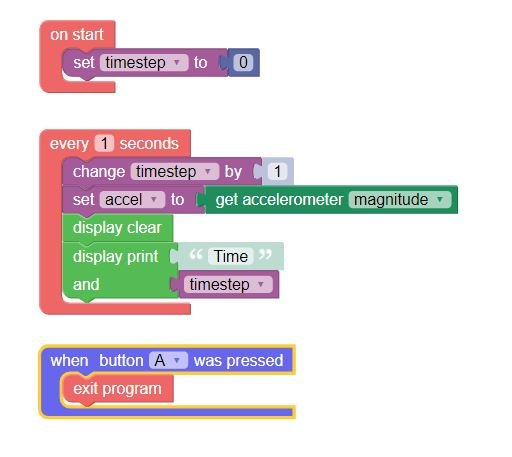
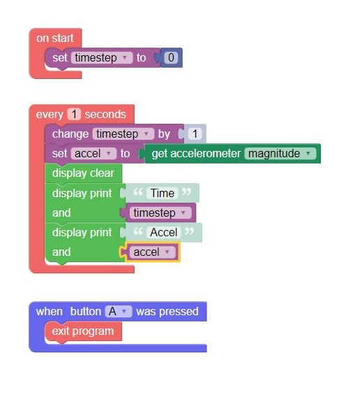

CubeSat Project 1 Instructions
Download the final code here.
Step 1. Clear the display, and print "Hello". Run your program to test it.

Step 2. Create a new variable called "name".

Step 3. Set the name variable, and change your print to print "Hello" and then your name variable.

Step 4. Test your program. Once it is working, you can click "New" and we'll start the project.
Step 5. Use the "on start" block to set a new "timestep" variable to 0.
Do not call this variable "time".
Step 6. Add an "every 1 seconds" block, and inside it, "change" the timestep, then clear the display and print "time" and your "timestep" variable.

Step 7. Add a "when button A was pressed" block with "exit program" inside it, to let you quit your program. Run it to test that it counts up every second and you can quit it.

Step 8. Create a new "accel" variable, and use the accelerometer sensor to set it to the magnitude.

Step 9. Also print the acceleration value to the display.

This is the final program. Run it to make sure that it prints both values to the screen, and stops when you press A.